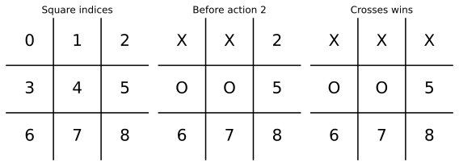
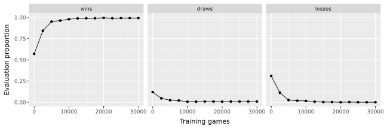
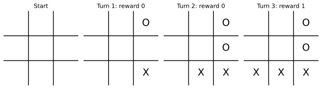

import random
EMPTY = (0,) * 9
MARKS = {1: "X", -1: "O"}
LINES = ((0, 1, 2), (3, 4, 5), (6, 7, 8),
(0, 3, 6), (1, 4, 7), (2, 5, 8),
(0, 4, 8), (2, 4, 6))13 Reinforcement Learning
A tic-tac-toe player chooses a square, observes the opponent’s reply, and chooses again. A move that looks harmless now may allow a loss several moves later. How can a program learn which choices lead to good outcomes without receiving a correct-move label for every position?
Reinforcement learning addresses this kind of sequential decision problem. An agent acts in an environment, receives rewards, and uses its experience to improve a policy for choosing actions. The \((X, A, Y)\) formulation in Chapter 10 becomes a sequence of states, actions, and rewards. Unlike the labeled prediction problems in Chapter 11, the agent’s choices also affect which situations it encounters next (Sutton & Barto, 2018).
This chapter builds a tic-tac-toe learner in small steps. We implement the rules, define one interaction with an opponent, store action values, and update them with Q-learning. We then train the agent, evaluate it with learning turned off, inspect a complete game, and provide a way to play against it. The code uses a Python dictionary for the value table; no neural network or additional reinforcement-learning package is needed.
Tic-tac-toe is also an introductory example in Sutton and Barto’s book. The implementation here uses action-value Q-learning, rather than the state-value procedure in their opening example. The small game lets us inspect the complete learning process and construct an exact-search benchmark (Sutton & Barto, 2018; Watkins & Dayan, 1992).
13.1 States, Actions, and Rewards
The learner always plays crosses, X, and moves first. Its opponent plays noughts, O. We keep those roles fixed throughout training and evaluation. Results therefore describe learning to play first; playing second requires a different starting-state procedure or representation.
A state records all nine squares immediately before the learner chooses an action. Empty squares are encoded as \(0\), crosses as \(1\), and noughts as \(-1\). The mathematical symbol \(X_t\) denotes the entire state at decision time \(t\); the game mark X is just one kind of entry on that board. A legal action is the index of an empty square, numbered 0 through 8 from left to right and top to bottom.
One learning transition includes the learner’s move and, if the game continues, the opponent’s reply. We record it as
\[ (X_t, A_t, Y_{t+1}, X_{t+1}), \]
where \(A_t\) is the chosen square, \(Y_{t+1}\) is the reward received after that interaction, and \(X_{t+1}\) is the resulting board. Time counts the learner’s decisions, rather than every individual mark placed. If either player ends the game, the transition stops immediately.
| Part of the learning problem | Tic-tac-toe implementation |
|---|---|
| Agent | The player making crosses |
| State \(X_t\) | The nine-square board before its decision |
| Action \(A_t\) | An empty square |
| Environment | The game rules and the opponent’s behavior |
| Reward \(Y_{t+1}\) | \(+1\) for a win, \(-1\) for a loss, and \(0\) otherwise |
| Terminal state | A winning line or a full board with no winner |
| Episode | One complete game, starting from an empty board |
The reward is zero both for an unfinished interaction and for a draw. A separate termination flag distinguishes those cases. A loss caused by the opponent’s reply belongs to the transition that began with the learner’s preceding move. Updating before that reply would miss an important consequence of the chosen action.
13.1.1 Policy and Return
A policy \(\pi(a \mid x)\) gives the probability of choosing action \(a\) in state \(x\). The aim is to maximize expected return, which combines the rewards remaining in an episode. If \(T\) is the number of learner decisions until termination, the return from time \(t\) is
\[ G_t = \sum_{k=0}^{T-t-1} \gamma^k Y_{t+k+1}, \]
where \(k\) indexes future rewards and \(\gamma \in [0,1]\) is the discount factor. We set \(\gamma = 1\). Every legal game terminates in at most five learner decisions, so an undiscounted return is finite. With only a final nonzero reward, the return is the game’s outcome: win, draw, or loss. This objective does not favor a faster win over a slower win.
The opponent is part of the environment. During training it chooses each legal reply with equal probability. With that fixed, memoryless rule, the board at the learner’s turn contains the information needed for the next transition: previous boards do not supply additional information about which reply will be sampled. This is the Markov property in this example. If an opponent’s behavior depends on unrecorded history, that assumption would require reconsideration.
13.2 Implementing the Game
We first need rules that behave correctly before asking a learner to use them. A tuple stores the board so that it can later serve as a dictionary key. We use standard-library random-number generators with explicit seeds. The constants below describe the empty board, the printed marks, and the eight possible winning lines.
The eight triples in LINES are the rows, columns, and diagonals. The outcome function returns 1 for a crosses win, -1 for a noughts win, and 0 for a draw. An unfinished game returns None.
def outcome(board):
"""Return 1 for a crosses win, -1 for noughts, 0 for a draw, or None."""
for i, j, k in LINES:
if board[i] != 0 and board[i] == board[j] == board[k]:
return board[i]
return 0 if 0 not in board else NoneAn action is legal only when the game is unfinished and its square is empty. Returning no actions after a winning line prevents the simulator from continuing a game merely because some squares remain blank.
def legal_actions(board):
"""Return empty-square indices, or an empty tuple if the game ended."""
if outcome(board) is not None:
return ()
return tuple(i for i, mark in enumerate(board) if mark == 0)The move function checks legality and returns a new tuple. It leaves the previous board intact, so a stored transition continues to describe the position that existed before the move. The episode loop below controls whose turn it is; this helper checks the marker and square.
def place(board, action, mark):
"""Place a mark on a legal square and return a new board."""
if mark not in (1, -1) or action not in legal_actions(board):
raise ValueError("Use an empty square in an unfinished game.")
updated = list(board)
updated[action] = mark
return tuple(updated)The display helper draws a board and can show indices on empty squares. It provides the same position convention used by the action-selection code and the human-play interface. The divmod(pos, 3) call gives the row and column of a square. The vertical coordinate increases upward, so 2 - row puts the first row at the top.
import matplotlib.pyplot as plt
from matplotlib_inline.backend_inline import set_matplotlib_formats
set_matplotlib_formats("svg")
def draw_board(board, ax, number_empty=False):
"""Draw marks and, optionally, indices on empty squares."""
for pos, value in enumerate(board):
row, col = divmod(pos, 3)
label = MARKS.get(value, str(pos) if number_empty else "")
ax.text(col, 2 - row, label, ha="center", va="center", fontsize=20)
for edge in (0.5, 1.5):
ax.plot([-0.5, 2.5], [edge, edge], color="black")
ax.plot([edge, edge], [-0.5, 2.5], color="black")
ax.set(xlim=(-0.5, 2.5), ylim=(-0.5, 2.5), aspect="equal")
ax.axis("off")The example below shows an empty board and a position where crosses can win by choosing square 2. The display makes that winning line visible; the learning algorithm will receive only the numerical consequence of its sampled action.
win_board = (1, 1, 0, -1, -1, 0, 0, 0, 0)
won_board = place(win_board, 2, 1)
fig, axes = plt.subplots(1, 3, figsize=(8, 2.8))
for ax, board, title in zip(
axes, [EMPTY, win_board, won_board],
["Square indices", "Before action 2", "Crosses wins"]
):
draw_board(board, ax, number_empty=True)
ax.set_title(title)
fig.tight_layout()
plt.show()
13.2.1 One Environment Transition
The training opponent chooses uniformly from its legal replies. Its function accepts the current board and a random-number generator. Later we can substitute another opponent without changing the episode loop. The argument rng is a random.Random object, whose choice method samples one item from a sequence. Passing the opponent function as an argument lets the game engine call it whenever noughts must reply.
def random_opponent(board, rng):
"""Choose a legal noughts reply uniformly at random."""
return rng.choice(legal_actions(board))The transition function places crosses, checks whether the game ended, then obtains and places the opponent’s reply if needed. Only after both parts does it return the next decision state. It saves the interaction in one dictionary, including the opponent’s chosen square. A crosses win has reply=None because the opponent gets no further move.
| Dictionary key | Meaning |
|---|---|
board |
State \(X_t\) before the learner acts |
action |
Chosen action \(A_t\) |
reply |
Opponent’s square, or None if crosses ended the game |
reward |
Reward \(Y_{t+1}\) |
next_board |
Resulting state \(X_{t+1}\) |
done |
Whether the game has ended |
def step(board, action, opponent, rng):
"""Play a crosses action and any reply; return the transition record."""
next_board = place(board, action, 1)
result = outcome(next_board)
reply = None
if result is None:
reply = opponent(next_board, rng)
next_board = place(next_board, reply, -1)
result = outcome(next_board)
return {
"board": board, "action": action, "reply": reply,
"reward": 0 if result is None else result,
"next_board": next_board, "done": result is not None
}For the winning position above, the game ends immediately after action 2; the opponent must not receive another move. The reward is 1 even though the terminal board still has blank squares.
win_transition = step(win_board, 2, random_opponent, random.Random(2026))
win_transition{'board': (1, 1, 0, -1, -1, 0, 0, 0, 0),
'action': 2,
'reply': None,
'reward': 1,
'next_board': (1, 1, 1, -1, -1, 0, 0, 0, 0),
'done': True}13.3 Learning Action Values
An action value describes expected return after taking a particular action and then following a policy. For policy \(\pi\), define
\[ q_\pi(x,a) = \mathbb{E}_\pi[G_t \mid X_t=x, A_t=a]. \]
The expectation includes the opponent’s random replies and any randomness in the learner’s later decisions. An optimal action value, denoted \(q_*(x,a)\), maximizes expected return over the learner’s policies for this fixed environment. It need not describe optimal play against every possible opponent.
Our estimate is a table \(Q(x,a)\), stored in a Python dictionary with (board, action) keys. Missing entries have value zero. These are value estimates, rather than labels supplied by an expert or probabilities that must lie between zero and one. With our reward definition they can also be negative.
The following helper collects the estimates for legal actions in one place. The expression q.get((board, action), 0.0) reads an existing value or returns zero for a missing key; it does not add that key to q. A terminal board gives an empty dictionary. Both action selection and learning will use this helper so that their action sets agree.
def q_values(q, board):
"""Return current estimates for this board's legal actions."""
return {action: q.get((board, action), 0.0)
for action in legal_actions(board)}Before training, the winning position’s legal actions all have zero estimates. The program knows which squares are legal from the rules; it has not yet learned their consequences.
q_values({}, win_board){2: 0.0, 5: 0.0, 6: 0.0, 7: 0.0, 8: 0.0}13.3.1 Exploration and Exploitation
Always choosing the current largest estimate exploits the table but may neglect actions that were unlucky or never tried. An epsilon-greedy rule explores with probability \(\epsilon \in [0,1]\): it chooses a uniformly random legal action. Otherwise it chooses an action with the largest current value. Equal best values are broken randomly, so the initial all-zero table does not automatically favor square 0.
The function below reads the table without changing it. Both the random choice and the maximization consider legal actions only. Iterating over a dictionary gives its keys, so list(values) is a list of legal square indices. The last two lines find the largest estimate and collect all actions tied at that value before choosing among them.
def choose_action(q, board, rng, epsilon=0.0):
"""Choose an epsilon-greedy action without changing q."""
values = q_values(q, board)
if not values:
raise ValueError("Cannot choose an action after the game has ended.")
if rng.random() < epsilon:
return rng.choice(list(values))
best = max(values.values())
ties = [action for action, value in values.items() if value == best]
return rng.choice(ties)With an empty table and epsilon=0, all legal actions tie, so this rule still behaves as a uniformly random player. As estimates change, the explicit exploration probability keeps other actions available during training. We will use epsilon=0 when evaluating the fitted policy.
13.3.2 The Q-Learning Update
A sampled transition supplies an immediate reward and a new estimate of what may follow. Define its target \(Z_t\) by
\[ Z_t = \begin{cases} Y_{t+1}, & \text{if the game has ended}, \\ Y_{t+1} + \gamma \max_{b \in \mathcal{A}(X_{t+1})} Q(X_{t+1},b), & \text{otherwise}, \end{cases} \]
where \(\mathcal{A}(x)\) is the set of legal actions in state \(x\) and \(b\) indexes a possible next action. Q-learning moves the current estimate toward that target:
\[ Q(X_t,A_t) \leftarrow Q(X_t,A_t) + \alpha\{Z_t-Q(X_t,A_t)\}, \]
where \(\alpha \in (0,1]\) is the learning rate. The difference between the target and the old value is the temporal-difference error. A terminal transition has no future action value, even if blank squares remain. For a nonterminal transition, the maximum makes the target greedy while the sampled action may have been exploratory; Q-learning is therefore an off-policy method (Watkins & Dayan, 1992).
def update_q(q, transition, alpha=0.2, gamma=1.0):
"""Update one entry of q in place using a transition record."""
target = transition["reward"]
if not transition["done"]:
next_values = q_values(q, transition["next_board"])
target += gamma * max(next_values.values())
key = (transition["board"], transition["action"])
old = q.get(key, 0.0)
q[key] = old + alpha * (target - old)A single winning observation moves a previously zero entry to 0.2 when alpha=0.2. This checks the terminal branch of the update using a known outcome from the game rules. The function changes q_demo directly; it does not return a replacement dictionary.
q_demo = {}
update_q(q_demo, win_transition, alpha=0.2, gamma=1.0)
q_demo[(win_board, 2)]0.2Earlier decisions can improve without an immediate reward. To isolate that arithmetic, suppose an illustrative table already gives the best next action a value of 0.8. A preceding action with zero immediate reward then has target 0.8 and moves from zero to 0.16. The value 0.8 below is a specified illustration, not an estimate from the trained agent.
mid_transition = step(EMPTY, 0, random_opponent, random.Random(2026))
mid_board = mid_transition["next_board"]
next_action = legal_actions(mid_board)[0]
q_demo[(mid_board, next_action)] = 0.8
update_q(q_demo, mid_transition, alpha=0.2, gamma=1.0)
round(q_demo[(EMPTY, 0)], 2)0.16Repeated interactions allow information about late outcomes to affect estimates for earlier choices. That is the credit-assignment problem in this example: learning which earlier actions help produce a final win or loss. The table update uses the sampled consequence, without searching the entire game tree.
13.4 From One Game to Training
An episode repeats four operations: choose an action, take an environment step, optionally update the table, and stop if the game ended. The learn flag determines whether updates occur. A separate record flag saves a trace for inspecting a game without storing every training transition.
The loop starts from the same empty board each time. A nonterminal next board is always another crosses decision, so no extra player-to-move field is needed in this particular state representation. The first three arguments supply the value table, the opponent function, and the random generator. The remaining options control learning or recording:
| Option | Role |
|---|---|
epsilon |
Probability of exploring rather than selecting a best estimate |
learn |
Update the table when True; leave it fixed when False |
alpha |
Learning rate \(\alpha\) passed to the update |
gamma |
Discount factor \(\gamma\) passed to the update |
record |
Save transitions in a list for later inspection |
The function always returns the final reward and a list of recorded transitions. When record=False, that list is empty. One shared loop keeps training, evaluation, and human play subject to exactly the same game rules.
def play_episode(q, opponent, rng, epsilon=0.0, learn=False,
alpha=0.2, gamma=1.0, record=False):
"""Play one game; optionally update q or save its transitions."""
board = EMPTY
trace = []
while True:
action = choose_action(q, board, rng, epsilon=epsilon)
transition = step(board, action, opponent, rng)
if learn:
update_q(q, transition, alpha=alpha, gamma=gamma)
if record:
trace.append(transition)
if transition["done"]:
return transition["reward"], trace
board = transition["next_board"]13.4.1 Evaluating a Frozen Policy
The evaluator plays complete games with epsilon=0 and the default learn=False. It counts wins, draws, and losses from the learner’s perspective. Mean reward is the win proportion minus the loss proportion under our reward definition. Evaluation cannot insert or update table entries because action selection uses dictionary lookups and the update branch is disabled. The underscore in reward, _ discards the unused recording list; the reward determines which outcome count increases.
def evaluate(q, opponent, games, seed):
"""Count outcomes in fresh games without updating q."""
if games < 1:
raise ValueError("games must be positive")
rng = random.Random(seed)
counts = {1: 0, 0: 0, -1: 0}
for _ in range(games):
reward, _ = play_episode(q, opponent, rng, epsilon=0.0, learn=False)
counts[reward] += 1
return {
"games": games, "wins": counts[1], "draws": counts[0],
"losses": counts[-1],
"mean_reward": (counts[1] - counts[-1]) / games
}Before training, an empty table supplies the random-action baseline. Every player in this comparison moves first as crosses, so the baseline shares the same first-move role as the learner.
baseline = evaluate({}, random_opponent, games=500, seed=2027)
baseline{'games': 500, 'wins': 285, 'draws': 60, 'losses': 155, 'mean_reward': 0.26}13.4.2 Training Schedule
We train for 30,000 games against the same random opponent. The exploration probability decreases linearly from near one to 0.1 during the first 18,000 games and remains at 0.1 afterward. The formula below uses 20,000 as its denominator, so the floor is reached when \(1-\text{episode}/20{,}000 = 0.1\). The learning rate remains 0.2 and the discount factor remains one.
Training uses its own random generator with seed 2026. Every 2,500 training games, we evaluate the current table on 500 games using the separate monitoring seed 2027. Resetting that evaluation seed makes the monitoring experiment reproducible and does not consume training randomness. The model settings and final training length are fixed in advance.
q = {}
train_rng = random.Random(2026)
initial = baseline.copy()
initial["episodes"] = 0
history = [initial]We reuse the baseline evaluation for the zero-training checkpoint. A copy lets us add the episode counter without changing the original baseline record. The loop then trains one game at a time and stores a new evaluation record at each checkpoint.
for episode in range(1, 30_001):
epsilon = max(0.1, 1 - episode / 20_000)
play_episode(
q, random_opponent, train_rng, epsilon=epsilon, learn=True,
alpha=0.2, gamma=1.0
)
if episode % 2500 == 0:
scores = evaluate(q, random_opponent, games=500, seed=2027)
scores["episodes"] = episode
history.append(scores)The resulting table reports performance of frozen greedy policies, rather than outcomes of the exploratory training games. That distinction matters: a learning agent can deliberately make exploratory mistakes during training that its evaluated policy would avoid.
import pandas as pd
learning_history = pd.DataFrame(history)
learning_history[["episodes", "wins", "draws", "losses", "mean_reward"]]| episodes | wins | draws | losses | mean_reward | |
|---|---|---|---|---|---|
| 0 | 0 | 285 | 60 | 155 | 0.260 |
| 1 | 2500 | 421 | 23 | 56 | 0.730 |
| 2 | 5000 | 475 | 12 | 13 | 0.924 |
| 3 | 7500 | 481 | 10 | 9 | 0.944 |
| 4 | 10000 | 489 | 3 | 8 | 0.962 |
| 5 | 12500 | 494 | 3 | 3 | 0.982 |
| 6 | 15000 | 495 | 4 | 1 | 0.988 |
| 7 | 17500 | 495 | 4 | 1 | 0.988 |
| 8 | 20000 | 497 | 3 | 0 | 0.994 |
| 9 | 22500 | 495 | 4 | 1 | 0.988 |
| 10 | 25000 | 496 | 4 | 0 | 0.992 |
| 11 | 27500 | 496 | 4 | 0 | 0.992 |
| 12 | 30000 | 496 | 4 | 0 | 0.992 |
The figure uses facets to compare the three outcome proportions. All panels have the same vertical scale. The policies at successive checkpoints share training history, and the monitoring experiments reuse a seed; the points should not be treated as independent training replications. We use plotnine for the faceted display.
import plotnine as gg
gg.options.figure_format = "svg"curve = learning_history.melt(
id_vars=["episodes", "games"], value_vars=["wins", "draws", "losses"],
var_name="outcome", value_name="count"
)
curve["rate"] = curve["count"] / curve["games"]
curve["outcome"] = pd.Categorical(
curve["outcome"], categories=["wins", "draws", "losses"], ordered=True
)
p = (
gg.ggplot(curve, gg.aes(x="episodes", y="rate"))
+ gg.geom_line()
+ gg.geom_point()
+ gg.facet_wrap("~ outcome", nrow=1)
+ gg.scale_y_continuous(limits=(0, 1))
+ gg.labs(x="Training games", y="Evaluation proportion")
+ gg.theme(figure_size=(9, 3))
)
p
Against the random opponent, the win proportion rises and the loss proportion falls substantially in this run. The last monitoring checkpoint has 496 wins and four draws in 500 games. Small fluctuations between checkpoints are expected; an increasing win curve is not a guarantee of convergence or a proof about every reachable board.
The table stores 7,311 visited state-action pairs across 2,413 decision states. It does not combine rotated or reflected boards. Keeping a table is feasible for this small game, but the number of states grows rapidly in larger problems. Function approximation, including neural networks, can share information across states instead of storing every pair.
{"state_action_pairs": len(q), "decision_states": len({board for board, a in q})}{'state_action_pairs': 7311, 'decision_states': 2413}The classical convergence result for tabular Q-learning requires sufficient state-action exploration and appropriate learning-rate conditions. A finite run with a constant learning rate does not establish those asymptotic conditions. Here the evidence is the measured behavior of a fitted table in a controlled game (Watkins & Dayan, 1992).
13.5 Testing against a Stronger Opponent
Learning against random play answers a specific question: how well can crosses perform when noughts makes random legal replies? A stronger opponent changes the transition probabilities. We therefore evaluate the same frozen table against an opponent that searches the remaining game tree. This benchmark also checks whether a high win rate against random play hides avoidable losses against deliberate play.
13.5.1 An Exact-Search Benchmark
For this small game, we can calculate the outcome under optimal play. The recursive function returns the result from crosses’ perspective. At a crosses turn it takes the largest value among legal continuations; at a noughts turn it takes the smallest. A terminal board supplies its known outcome. The cache decorator saves previously computed board-turn values, avoiding repeated searches of the same continuation. This uses the same recursion and caching ideas as the Fibonacci examples in Chapter 4. Multiplying a marker by \(-1\) switches whose turn is searched.
This is minimax search, a planning procedure using the known game rules. It is used only as a benchmark here. The Q-learning training loop did not call it or receive its chosen moves as labels.
from functools import cache@cache
def perfect_value(board, mark):
"""Return the optimal game outcome from crosses' perspective."""
result = outcome(board)
if result is not None:
return result
values = []
for action in legal_actions(board):
next_board = place(board, action, mark)
value = perfect_value(next_board, -mark)
values.append(value)
if mark == 1:
return max(values)
return min(values)Under optimal play from the empty board, the value is zero: either side can prevent a loss, resulting in a draw. This is a property of the searched game tree, rather than an inference from a finite batch of training games.
perfect_value(EMPTY, 1)0The benchmark opponent plays noughts. It chooses a reply whose searched value is smallest for crosses, breaking ties randomly. Because every continuation is finite, the recursion stops without a depth cutoff.
def perfect_opponent(board, rng):
"""Choose a game-theoretically optimal noughts reply."""
values = {}
for action in legal_actions(board):
next_board = place(board, action, -1)
values[action] = perfect_value(next_board, 1)
best = min(values.values())
ties = [action for action, value in values.items() if value == best]
return rng.choice(ties)13.5.2 Final Evaluation
We now use a fresh evaluation seed, 2028, and 2,000 games for each agent-opponent combination. The training table and all settings remain fixed. The random-action baseline is still an empty table interpreted by the same action-selection rule.
rows = []
for agent, table in [("random", {}), ("learned", q)]:
for opponent_name, opponent in [
("random", random_opponent), ("minimax", perfect_opponent)
]:
scores = evaluate(table, opponent, games=2000, seed=2028)
scores["agent"] = agent
scores["opponent"] = opponent_name
rows.append(scores)
results = pd.DataFrame(rows)
results[["agent", "opponent", "games", "wins", "draws", "losses", "mean_reward"]]| agent | opponent | games | wins | draws | losses | mean_reward | |
|---|---|---|---|---|---|---|---|
| 0 | random | random | 2000 | 1181 | 241 | 578 | 0.3015 |
| 1 | random | minimax | 2000 | 0 | 467 | 1533 | -0.7665 |
| 2 | learned | random | 2000 | 1992 | 8 | 0 | 0.9960 |
| 3 | learned | minimax | 2000 | 0 | 2000 | 0 | 0.0000 |
The learned policy wins 1,992 games and draws eight against random play, with no observed losses. Against the search opponent, all 2,000 games are draws. Its mean rewards are therefore 0.996 and zero, respectively. A draw against perfect play is a successful defensive result, because crosses cannot force a win against that opponent from the empty board.
These counts describe one trained table, a fixed starting role, and the specified opponents. Zero observed losses alone does not prove that the table handles every legal continuation. The search opponent chooses among its game-theoretic best moves; it does not explicitly search for mistakes in this particular learned table.
A Wilson interval illustrates the simulation uncertainty in a loss proportion. For zero losses in 2,000 independent simulated games under a fixed policy-opponent combination, the upper endpoint is about 0.0019. This interval conditions on the fitted table; it does not measure variation across independent training runs or unfamiliar opponents (statsmodels Developers, 2026). The calculation reads the observed counts from the results table, so changing the experiment also changes its interval.
from statsmodels.stats.proportion import proportion_confint
random_result = results.loc[
(results["agent"] == "learned") & (results["opponent"] == "random")
].iloc[0]
loss_limits = proportion_confint(
random_result["losses"], random_result["games"],
alpha=0.05, method="wilson"
)
pd.DataFrame({"lower": [loss_limits[0]], "upper": [loss_limits[1]]})| lower | upper | |
|---|---|---|
| 0 | 1.084202e-19 | 0.001917 |
13.6 Inspecting a Learned Game
A summary score does not show which decisions produced it. We record one game against random play using seed 2029. Recording saves each board, chosen action, reward, next board, and termination flag; it does not turn learning back on.
demo_return, trace = play_episode(
q, random_opponent, random.Random(2029), record=True
)
turns = pd.DataFrame(trace)
turns["turn"] = range(1, len(turns) + 1)
turns["reply"] = turns["reply"].astype("Int64")
turns[["turn", "action", "reply", "reward", "done"]]| turn | action | reply | reward | done | |
|---|---|---|---|---|---|
| 0 | 1 | 8 | 2 | 0 | False |
| 1 | 2 | 7 | 5 | 0 | False |
| 2 | 3 | 6 | <NA> | 1 | True |
The snapshots show the empty board and the board after each environment transition. A terminal crosses win has no opponent reply in its final transition. Follow the square indices from Figure 13.1 to relate these boards to the actions in the table. The saved reply field gives the opponent move directly. Pandas’ nullable integer type Int64 displays the absent final reply as a missing value while keeping square indices as integers.
boards = [EMPTY] + [transition["next_board"] for transition in trace]
fig, axes = plt.subplots(1, len(boards), figsize=(2.3 * len(boards), 2.8))
for i, (ax, board) in enumerate(zip(axes, boards)):
draw_board(board, ax)
title = "Start" if i == 0 else f"Turn {i}: reward {trace[i-1]['reward']}"
ax.set_title(title)
fig.tight_layout()
plt.show()
The legal moves and game outcomes are computed by rules, while the action preferences come from the learned table. The distinction is visible in this position: the rules identify legal actions, and the table assigns estimated returns only to those actions.
values = q_values(q, win_board)
action_values = pd.DataFrame({
"action": list(values), "q_value": list(values.values())
})
action_values| action | q_value | |
|---|---|---|
| 0 | 2 | 0.914101 |
| 1 | 5 | 0.196160 |
| 2 | 6 | 0.000000 |
| 3 | 7 | -0.275520 |
| 4 | 8 | 0.097600 |
Action 2 has the largest estimate, about 0.914, and completes the winning row shown in Figure 13.1. The estimate has not reached the known terminal return of one because the table has received only a finite number of incremental updates at this position. A zero entry can also reflect lack of experience rather than evidence that the action leads to a draw.
13.6.1 Playing against the Agent
A human can take the noughts role by supplying a different opponent function. The console display uses the same square indices as the plot. These functions are defined during rendering; they request input only when play_human(q) is called in an interactive session after running the preceding code chunks.
def print_board(board):
"""Print marks and empty-square indices for a console player."""
labels = [MARKS.get(value, str(i)) for i, value in enumerate(board)]
for start in (0, 3, 6):
print(" | ".join(labels[start:start + 3]))
if start < 6:
print("---------")The human opponent is asked for a legal square after crosses has moved. It retries an invalid entry before returning a move to the game engine. The rng argument keeps the same interface as the other opponent functions, although this opponent obtains its action from the keyboard. The try block converts the entry to an integer. A ValueError triggers a new prompt for text such as hello or ²; continue restarts the loop. A converted integer must still pass the legal-square check.
def human_opponent(board, rng):
"""Ask for a legal noughts move, retrying invalid input."""
print_board(board)
while True:
try:
action = int(input("Your square (0–8): "))
except ValueError:
print("Enter a whole-number square index.")
continue
if action in legal_actions(board):
return action
print("Choose an empty square shown on the board.")The wrapper plays one frozen-policy game and prints the final board and result. Human moves are outside the random-opponent training environment, so their outcomes should be interpreted in that context.
def play_human(q, seed=2029):
"""Play one game as noughts against the frozen learned policy."""
reward, trace = play_episode(
q, human_opponent, random.Random(seed), learn=False, record=True
)
print_board(trace[-1]["next_board"])
print({1: "Crosses wins.", 0: "Draw.", -1: "You win."}[reward])To start a game in the interactive session, run:
play_human(q)13.7 Scope of the Example
This agent learns a table from sampled interactions and receives no expert-action labels. It nevertheless relies on substantial choices made by the analyst: the board encoding, legal-action rules, reward definition, opponent, exploration schedule, learning rate, and evaluation design. A different reward or opponent can change what a good policy means.
The Markov assumption is manageable because the full board is visible and the training opponent has a fixed rule. Larger applications may involve partial observations, changing environments, costly exploration, or a reward that only imperfectly represents the intended goal. Those issues must be addressed before transferring the method to a substantive real-world decision problem (Sutton & Barto, 2018).
The representation also limits transfer. Rotations and reflections are stored separately, and the learner always moves first. Extending the agent to both roles requires recording whose turn it is, maintaining a consistent reward perspective, and defining which positions begin an episode. Self-play would additionally make the training opponent change as learning proceeds. These are changes to the learning problem, not just new hyperparameter values.
Exercises
13.1 Trace the state, action, and reward sequence.
- Using
win_board, list the legal actions and identify an action that ends the game immediately. Report the next state, reward, anddone. - Construct a nonterminal crosses-turn board where a poor action allows noughts to win on its reply. Use a specified legal opponent reply to demonstrate why the update must wait for the complete transition.
- Starting from a zero entry, calculate two consecutive terminal updates with reward one and learning rate 0.2. Check the values in Python.
- Explain how zero reward differs between an unfinished transition and a terminal draw, and how the implementation handles that difference.
13.2 Investigate exploration and evaluation.
- Compare the chapter’s exploration schedule with a fixed epsilon of 0.1, keeping the training length and learning rate unchanged. Report the settings and use several independent training seeds.
- Plot frozen-policy win, draw, and loss proportions against training games, using facets and comparable axes. Describe the variation across training runs.
- Evaluate the final tables using fresh games against both random and minimax opponents. Report counts and average rewards, and distinguish evaluation-game uncertainty from training-run variation.
- Explain why training-game win proportions can differ from the frozen-policy evaluation proportions even against the same opponent.
13.3 Consider changes to the learning problem.
- Explain how setting a discount factor below one changes the relative value of early and late wins and losses in this game.
- Propose a state representation and starting procedure for a learner that sometimes plays second. Explain whose perspective the rewards use.
- Describe how rotation or reflection symmetry could reduce the table size. Explain why the action indices must be transformed with the board.
- Explain how a changing self-play opponent affects the fixed-environment interpretation used in this chapter, and propose an evaluation plan using frozen opponents.
References
statsmodels Developers. (2026). Proportion tests and confidence intervals. https://www.statsmodels.org/stable/generated/statsmodels.stats.proportion.proportions_ztest.html
Sutton, R. S., & Barto, A. G. (2018). Reinforcement learning: An introduction (2nd ed.). The MIT Press. http://incompleteideas.net/book/the-book-2nd.html
Watkins, C. J. C. H., & Dayan, P. (1992). Q-learning. Machine Learning, 8, 279–292. https://doi.org/10.1007/BF00992698